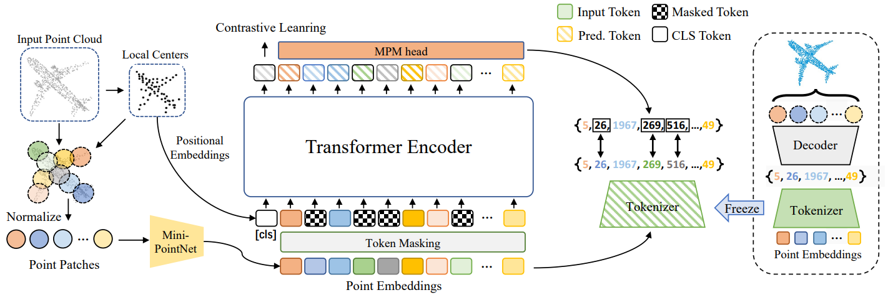

|
I am a researcher at Beijing Academy of Artificial Intelligence (BAAI). I completed my postdoctoral research at BAAI and Tsinghua University, under the supervision of Prof. Tiejun Huang and Prof. Jiwen Lu. I previously received my Ph.D. degree from University of Macao, and M.S. degree from Sichuan University. My research interests lie in the area of 3D computer vision, 3D generation models, and Vision-Language foundation models. |

|
|
(*: Equal Contribution, ♣: corresponding author) |
|  |
Xumin Yu*, Lulu Tang*, Yongming Rao*, Tiejun Huang, Jie Zhou, Jiwen Lu♣ IEEE/CVF Conference on Computer Vision and Pattern Recognition (CVPR), 2022 [arXiv] [Code] [Project Page] [Post] Point-BERT is a new paradigm for learning Transformers in an unsupervised manner by generalizing the concept of BERT onto 3D point cloud data. |
|
Ting Pan*, Lulu Tang*, Xinlong Wang♣, Shiguang Shan, European Conference on Computer Vision (ECCV), 2024 [arXiv] [Code] [Demo] TAP is a unified and promptable model capable of simultaneously segmenting, recognizing, and captioning arbitrary regions, with flexible visual prompts (point, box and sketch). |

|
Baorui Ma*, Huachen Gao*, Haoge Deng*, Zhengxiong Luo, Tiejun Huang, Lulu Tang♣, Xinlong Wang♣, [arxiv] [Project page] [Code] [Dataset] [Post] See3D is a scalable visual-conditional MVD model for open-world 3D creation, which can be trained on web-scale video collections without camera pose annotations. |
|
Jiyuan Zhang*, Lulu Tang*, Zhaofei Yu♣, Jiwen Lu, Tiejun Huang European Conference on Computer Vision (ECCV), 2022 [Paper] [Code] [Model] [Data] Spike-T is a Transformer-based network for learning spike data and estimating monocular depth from continuous spike streams. |
|
Luqing Luo*, Lulu Tang*, Wanyi Zhou, Shizheng Wang, Zhi-Xin Yang♣ IEEE/CVF International Conference on Computer Vision (ICCV), 2021 [arXiv] [Code] |
|
Lulu Tang*, Ke Chen*, Chaozheng Wu , Yu Hong , Kui Jia♣, Zhi-Xin Yang♣ IEEE Transactions on Cybernetics, 2020 [arXiv] |
|
Lulu Tang*, Zhi-Xin Yang♣, Kui Jia♣ IEEE Transactions on Cognitive and Developmental Systems, 2019 [Paper] |
|
Di Wang*, Lulu Tang, Xu Wang, Luqing Luo, Zhi-Xin Yang♣ Pattern Recognition, 2022 [Paper] |
|
Zhi-Xin Yang*, Lulu Tang ♣, Kun Zhang, Pak Kin Wong Cognitive Computation, 2022 [Paper] |